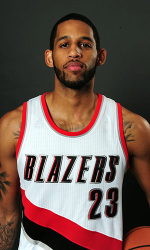

|  | Матчи | 51 | Передачи (всего/среднее) | 39 | 0.8 | |
| В основе | 9 | Подборы в защите (всего/среднее) | 66 | 1.3 | ||
| Время (всего/среднее) | 682:58 | 13:23 | Подборы в атаке (всего/среднее) | 7 | 0.1 | |
| Очки (всего/среднее) | 168 | 3.3 | Подборы (всего/среднее) | 73 | 1.4 | |
| 2-очковые броски (всего/среднее) | 33/68 | 0.6/1.3 | Перехваты (всего/среднее) | 19 | 0.4 | |
| 2-очковые броски (% реализации) | 48.5% | Потери (всего/среднее) | 15 | 0.3 | ||
| 3-очковые броски (всего/среднее) | 30/85 | 0.6/1.7 | Блокшоты (всего/среднее) | 15 | 0.3 | |
| 3-очковые броски (% реализации) | 35.3% | Блокшоты соперника (всего/среднее) | 2 | 2 | ||
| Штрафные броски (всего/среднее) | 107/141 | 1.4/1.9 | Фолы (всего/среднее) | 124 | 1.6 | |
| Аллен Краббе | Штрафные броски (% реализации) | 75% | Коэффициент полезности (всего/среднее) | 129 | 2.5 |